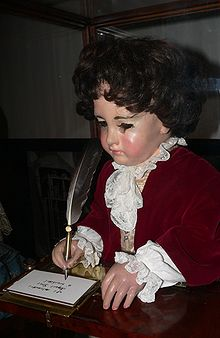

El Escritor es el autómata mas complejo de los tres, posee 6000 piezas que lo conforman, asi mismo no solo es
capáz de seguir la pluma con la mirada, sino que es capáz de mover la cabeza cuando este necesite mojar la pluma
de nuevo en el tintero, también puede esctibir textos de al rededor de 40 caracteres en cuatro lineas. Cada
texto que escribe se programa a base de piezas que se insertan en el disco que tiene en la parte posterior del
cuerpo, esto lo convierte en la primera máquina programable de la historia.
